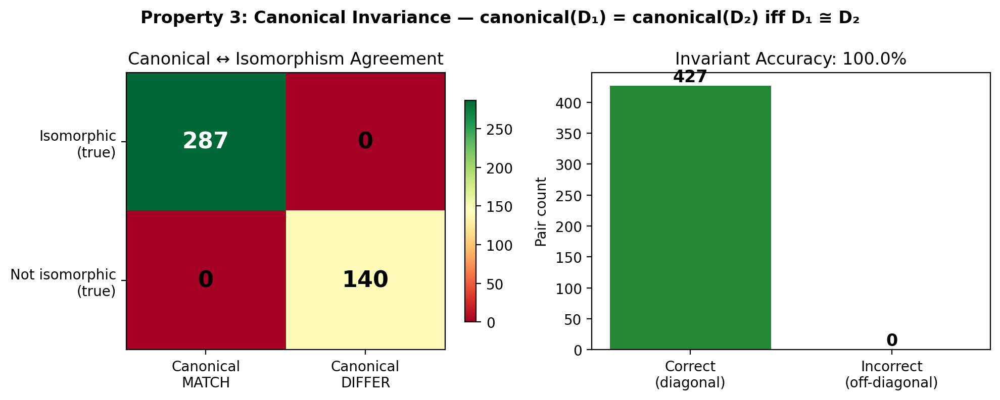
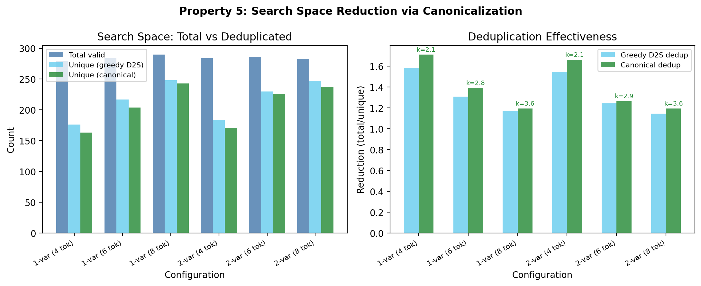

Mathematical Foundations
Formal definitions, theorems, and proofs underlying the IsalSR canonical string representation.
1. Labeled-DAG Isomorphism
Definition 1 (Labeled DAG)
A labeled directed acyclic graph is a tuple where is a finite set of nodes, is a set of directed edges such that the graph is acyclic, and is a labeling function mapping each node to a label from the set of operation types .
Definition 2 (Labeled-DAG Isomorphism)
Two labeled DAGs and are isomorphic () if there exists a bijection such that:
- (edge preservation)
- for all (label preservation)
- for all variable nodes (variable anchoring)
Remark
The variable anchoring condition (3) is crucial: input variables are pre-numbered and distinguishable under isomorphism. This means the isomorphism permutation can only rearrange internal (non-variable) nodes. For k internal nodes, there are at most k! such permutations.
2. The IsalSR Alphabet
Definition 3 (IsalSR Alphabet)
The alphabet consists of:
- Movement (single-char):
- Edge creation (single-char): with DAG cycle check
- No-op (single-char):
- Node insertion (two-char): or where
Total vocabulary: 7 single-char + 24 compound = 31 tokens.
The tokenizer is deterministic: bare c is always an edge instruction;
c after V/v is always a COS label.
The two-character tokens are atomic —
they cannot be split into separate instructions.
3. String-to-DAG (S2D)
Definition 4 (S2D Execution)
Given m input variables and an instruction string , the S2D algorithm produces a labeled DAG by executing each token sequentially, maintaining a machine state where D is the current DAG, L is the CDLL, and are the primary and secondary pointer positions.
Each token induces a deterministic state transition:
- N/P: Advance/retreat the primary pointer in the CDLL
- n/p: Advance/retreat the secondary pointer in the CDLL
- C: Add edge from node at to node at (if acyclic)
- c: Add edge from node at to node at (if acyclic)
- Vℓ: Create node with label ℓ, add to CDLL after , add edge from node at to new node
- vℓ: Same as Vℓ but from the secondary pointer
- W: No operation
Property P2 (DAG Acyclicity)
For any string , the output of S2D(w) is always a valid directed acyclic graph.
4. DAG-to-String (D2S)
The D2S algorithm encodes a labeled DAG as the shortest instruction string that, when decoded by S2D, produces an isomorphic DAG. Starting from a given variable node, it greedily selects displacement pairs (a, b) to minimize the total number of movement tokens.
Property P1 (Round-Trip Fidelity)
For any valid IsalSR string w:
That is, encoding and decoding preserves labeled-DAG isomorphism.
Property P4 (Evaluation Preservation)
Round-tripped DAGs evaluate identically: for any input values, the numerical output of the original and reconstructed DAGs agree within tolerance.
5. Canonical String
Definition 5 (Canonical String)
The canonical string of a labeled DAG D is:
where is the set of all valid instruction strings that decode to a DAG isomorphic to D. The canonical string is the lexicographically smallest among the shortest such strings.
Computation Algorithms
Three algorithms are implemented with different trade-offs:
Exhaustive (Reference)
Explores all k! permutations of internal node IDs, computing D2S for each. Complexity: . Correct but impractical for large k.
Pruned Exhaustive
Uses a 6-component structural tuple to prune the permutation tree. Partitions candidates by label before pruning (label-aware, invariant B13). Worst-case , typically much faster.
Fast Canonical (Preferred)
Greedy-invariant algorithm using 1-Weisfeiler-Leman subtree hashing. At each decision point, candidates are sorted by an isomorphism-invariant key. Unique best candidates are taken greedily (no backtracking); ties are resolved by lexmin backtracking over tied candidates only. Mean 1.43× speedup over pruned exhaustive on evolved Bingo DAGs.
WL Hash Justification
The 1-WL subtree hash captures the full rooted subtree structure. It is strictly more discriminative than the 6-component structural tuple (Weisfeiler & Leman, 1968; Shervashidze et al., JMLR 2011), which only captures depth-3 neighborhood counts.
6. Completeness Theorem
Property P3 (Canonical Invariance)
The canonical string is a complete labeled-DAG isomorphism invariant:
Proof sketch
() If , any permutation producing the lexmin string for D1 has an isomorphic counterpart for D2, yielding the same string.
() If , then and by round-trip fidelity, so by transitivity of isomorphism.

7. DAG Distance Metric
Definition 6 (DAG Distance)
The canonical string distance between two labeled DAGs D1 and D2 is:
where Lev is the Levenshtein (edit) distance. Since the canonical string is a complete invariant, this distance is well-defined on isomorphism classes.
Remark
This distance serves as a polynomial-time proxy for labeled DAG edit distance. It is a metric on the quotient space of labeled DAGs modulo isomorphism, inheriting the metric properties of Levenshtein distance.
8. Complexity Analysis
Property P5 (Search Space Reduction)
For a labeled DAG with k internal (non-variable) nodes, the canonical string representation reduces the effective search space by a factor of .
Precisely, each structural class has distinct node-numberings, where is the automorphism group order. For generic DAGs, and the reduction is exactly k!.

Algorithm Complexities
| Algorithm | Complexity | Notes |
|---|---|---|
| Exhaustive | Reference implementation | |
| Pruned | 6-tuple structural pruning | |
| Fast (WL) | Near- | Greedy-invariant, 1.43x speedup (preferred) |
| S2D | Decoding (cycle check per C/c) | |
| D2S | Greedy encoding |